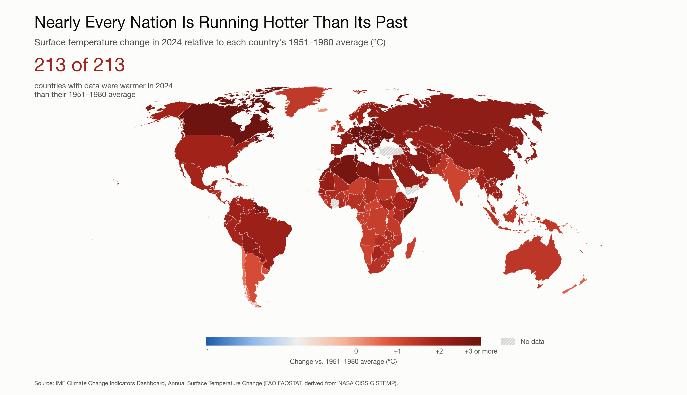
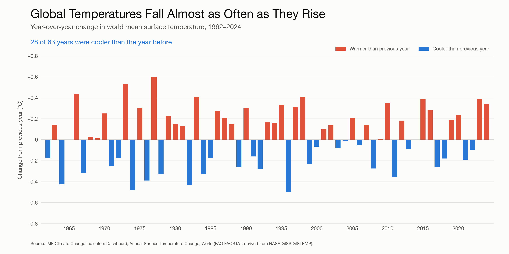

DSC 106 Project 2: Persuasive Visualizations (Climate)
Working page for the group. Proposition: “Climate change is real: global temperatures have risen meaningfully since the mid-20th century.” Data: IMF Climate Change Indicators Dashboard, Annual Surface Temperature Change.
Side 1: It’s real

Side 2: It’s overstated

Files
- checkpoint_skeleton.pdf: 3-page checkpoint layout with placeholders
- design_decisions.md: scored design decisions (rendered below)
- data_clean.csv: cleaned long-format data
Loading design decisions…